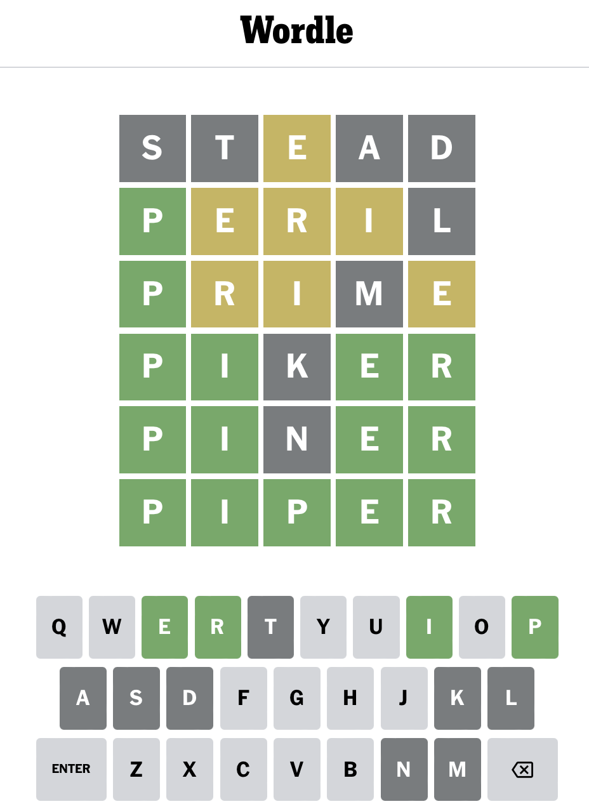

Next test: Pitting different LLMs against the puzzles Wordle and Connections from New York Times. I am super curious to see not just their problem-solving ability but also their ability to rationalize and explain their strategies. I will try to solve both of them first, and then will utilize Mixtral, GPT-4, and Llama to put their performances on display.
My Turn
Connections was prety easy today:
Wordle was trickier for me:

Mixtral’s Turn
First, I tried to see if GPT-4 can explain how to play these games. It gave me two fairly detailed explanations of how to play each game (I will include them at the end). I am now going to feed these explanations into the LLMs, just in case, and then ask then to solve the puzzles. Here we go:
Mixtral Wordle
Me: I want you to play today’s Wordle. Here are the instructions on how to play: GPT instructions
Mixtral: It first tried to play the whole game in one response. It created the word ‘sadly’ as its made-up answer and solved it in 6 attempts
Me: No, just guess one word at a time and I will give you the result of the word.
Mixtral: Sure, I’d be happy to play Wordle with you! Here’s my first guess:
Wordle guess (1/6): table
Please let me know the result of my guess so I can adjust my next guess accordingly.
Me: Zero green tiles, one yellow tile (E), four gray tiles (T, A, B, L).
Mixtral: Thanks for letting me know! Based on the feedback, I’ll try to guess a word with the letter “E” in it, but avoiding the letters “T,” “A,” “B,” and “L.” Here’s my next guess:
Wordle guess (2/6): debit
Let me know the result of this guess!
Clearly, it’s already a little bit confused. I told it no Ts or Bs, but it still guessed a word with both letters. At least the E is still in the word and in a different spot.
Me: Zero green tiles, two yellow tile (E, and I), three gray tiles (D, B, T).
Mixtral: Great, I’ll use the letters “E” and “I” in my next guess, and avoid the letters “D,” “B,” and “T.” Here’s my next guess:
Wordle guess (3/6): field
Please let me know the result of this guess!
Maybe it’s learning?
Me: One green tile (I), two yellow tile (E), three gray tiles (F, L, D).
Mixtral: Thanks for the feedback! I’ll use the letters “I” and “E” in my next guess, and try to find a word that contains a letter that I haven’t used yet. Here’s my next guess:
Wordle guess (4/6): pounce
Let me know the result of this guess!
Never mind; here we go, again. 6 letters, no I, and the E is in a spot which it was previously said it cannot be.
Me: That word is 6 letters. It can only be five.
Mixtral: You’re right, I apologize for the mistake. I’ll adjust my next guess to be a five-letter word with the letters “I” and “E” in it.
Wordle guess (4/6): ripen
Please let me know the result of this guess!
Wow, it’s actually almost there.
Me: Nice! Three green tiles (I, P, E), one yellow tile (R), one gray tile (N).
Mixtral: Great, I’m getting closer! I’ll use the letters “I,” “P,” “E,” and “R” in my next guess. Here’s my next guess:
Wordle guess (5/6): pierce
Let me know the result of this guess!
Think it might be time to give up.
Me: For “pierce,” first of all it’s a 6 letter word, second you did not listen to what I said about which letters were right.
Mixtral: I apologize for the confusion. Thank you for your patience. Based on your feedback, I’ll try to guess a five-letter word that contains the letters “I,” “P,” and “E,” with “I” and “E” in the correct positions. Here’s my next guess:
Wordle guess (5/6): pipes
Please let me know the result of this guess!
Proved me wrong once again when I thought it was out of the game. Let’s see if it can get it on the final guess. I don’t think it will because of the two Ps which will definitely confuse it.
Me: Nice. Four green tiles (P, I, P, E), zero yellow tiles, one gray tile (S).
Mixtral had a connection error here, had to re-prompt
Me: You have one try to get this word in wordle. Your guess was “pipes”, and both Ps, the I and the E are in the right spot. The S is not in the word.
Mixtral: Based on the information provided, the correct five-letter word for this Wordle puzzle is “PIPER.” The word “pipes” has two Ps, an I, and an E in the correct spots, and you mentioned that the S is not in the word. Therefore, the only possible word that fits the criteria is “PIPER.”
*Wow, it actually got it, I did not expect that. However, I will say, if the connection did not time out on the original conversation, I do not think that Mixtral would have gotten it because there was a whole history of a conversation that probably would have confused the LLM as we were seeing in a couple of the first few guesses. But when I restarted with one prompt in a brand new conversation, it was able to. Guess we’ll never know ¯_(ツ)_/¯*
Mixtral Connections
Now, let’s see how it performs in Connections:
Me: Connections instructions. I am going to give you the 16 words and you will try to solve it.
Mixtral: Sure, I’d be happy to try! Please provide me with the 16 words, and I’ll do my best to find the common connection between them.
Me: Middle, Core, Wine, Wing, Rind, Feather, Plant, Stem, Factory, Wind, Seed, Shop, Heavy, Wink, Light, Mill
Mixtral: Thank you for providing the words! Based on my analysis, the connection between these words is that they can all be preceded by the word “central” to form a new word or phrase:
- Central middle
- Central core
- Central wine (as in a central wine region)
- Central wing
- Central rind (as in the central rind of a cheese wheel)
- Central feather (as in a central feather in an arrow)
- Central plant (as in a central plant in a manufacturing facility)
- Central stem
- Central factory (as in a central factory that produces goods for a larger region)
- Central wind (as in a central wind pattern)
- Central seed (as in a central seed bank)
- Central shop (as in a central shop in a town or city)
- Central heavy (as in a central heavy industry area)
- Central wink (as in a central wink to indicate a secret)
- Central light (as in a central light source)
- Central mill (as in a central mill that processes goods for a larger region)
Therefore, the solution to this connections-style game could be “central.”
Clearly, the instructions weren’t explained in the best way as to say that there are supposed to be four distinct groups of ‘connections.’
Me: No, there are supposed to be four different groups of distinct connections.
Mixtral: I apologize for misunderstanding the format earlier. Based on the 16 words you provided, here are four possible groups of distinct connections:
Group 1: Parts of a Plant
- Stem
- Seed
- Rind
- Plant
Group 2: Types of Industrial Facilities
- Factory
- Mill
- Shop
Group 3: Things Related to Birds
- Wing
- Feather
- Wink (as in a bird’s wink or blink)
Group 4: Descriptors of Weight or Light
- Heavy
- Light
- Middle (as in a middleweight)
- Core (as in a core muscle group, which can be strengthened to improve balance and stability)
Group 5: Things Related to Wind or Air
- Wind
- Wing (as in a wing-shaped structure that catches the wind)
- Wine (as in the wind that helps to cool grapes in wine-growing regions)
The connections in this game can be subjective, and there may be other valid groupings as well.
smh
Me: Only four groups!
Mixtral: Apologies for the mistake earlier. Upon re-evaluating the words, here are four possible groups of distinct connections:
Group 1: Parts of a Plant
- Stem
- Seed
- Rind
- Plant
Group 2: Types of Industrial Facilities
- Factory
- Mill
- Shop
Group 3: Things Related to Birds
- Wing
- Feather
- Wink (as in a bird’s wink or blink)
Group 4: Descriptors of Weight or Light
- Heavy
- Light
- Middle (as in a middleweight)
- Core (as in a core muscle group, which can be strengthened to improve balance and stability)
It’s just not fully getting it. I can definitely see how Connections would be a much more difficult game to solve for an LLM than Wordle. It’s been close with Stem, Seed, Rind and Factory, Mill, Shop, but it’s literally missing two words: Wind and Wine. Let’s give it one more nudge.
Me: You are one word away from groups 1, 2, and 4, respectively, being correct.
Mixtral: Based on your feedback, here are the revised groups:
Group 1: Parts of a Fruit or Vegetable
Rind Seed Stem Core Plant (as in a fruit-bearing plant)
Group 2: Types of Establishments
Factory Shop Mill Wing (as in a wing of a building or hospital)
Group 3: Things Related to Birds
Wing Feather Wink (as in a bird’s wink or blink) Wind (as in a bird’s ability to catch the wind with its wings)
Group 4: Descriptors of Weight
Heavy Light Middleweight (which can be shortened to “middle”) Mill (as in a milligram, a unit of weight)
Thank you for your patience, and I hope this revised answer is helpful.
It is obviously not fully correct, but I think it definitely did a solid job getting close to the answer for an LLM. I was very curious to how the LLM would react to my follow-up prompts, as it is a lot easier to direct in Wordle, but Mixtral reacted better than I thought it would, and was only 2-3 words switched away from being correct.
GPT-4’s Turn
GPT Wordle
Me: You are going to try to get the wordle. You will guess a word, I will give you the result, then you will guess again, and so on.
GPT: Sounds like a fun challenge! Let’s get started.
My first guess is: CRANE
Me: Zero green tiles, two yellow tiles (R and E), three gray tiles (C, A, N).
GPT: With that feedback, let’s make a second guess. Given that “R” and “E” are in the word but not in the first and last positions, I’ll try a different combination:
My second guess is: REACT
Oh God, here we go again.
Me: I just told you there is no A or C in the word.
GPT: My apologies for the oversight. Let’s try a new guess without including the letters “A,” “C,” or “N.”
My second guess is: LOVER
Me: Two green tiles (E and R), zero yellow tiles, 3 gray tiles (L, O, V).
GPT: Great, with “E” and “R” as the confirmed green tiles, and knowing that “L,” “O,” and “V” are not in the word, I will make a new guess avoiding those letters and trying to find the correct positions for “E” and “R.”
My third guess is: TIGER
Now we’re getting somewhere.
Me: Three green tiles (I, E, R), zero yellow tiles, two gray tiles (T and G).
GPT: Now we know the positions for “I,” “E,” and “R,” with “I” in the first position. Since “T” and “G” are not in the word either, I’ll make a fourth guess:
My fourth guess is: IRATE
Me: NO! I just told you the I, E, and R were in the right spots in ‘Tiger.’
GPT: I apologize for the mistake. The correct positions are “I” as the first letter, “E” as the fourth letter, and “R” as the fifth letter. With this in mind, I will try another guess:
My fourth guess is: INNER
Me: Why is I the first letter?
GPT: I misunderstood your previous feedback. You mentioned that “I,” “E,” and “R” were green tiles in the word “TIGER,” which means they are in the correct positions in that word. Therefore, “I” is not the first letter; it is actually the second letter. The correct positions are “I” in the second place, “E” in the fourth place, and “R” in the fifth place.
Let’s try again with the correct placement:
My fourth guess is: FIBER
Me: Again, the I, E, and R are in the right spots, and F and B are not in the word.
GPT: Understood, with “I” in the third position, “E” in the fourth position, and “R” in the fifth position, and knowing that “F” and “B” are not in the word, I’ll make a new guess:
My fifth guess is: QUIRE
GPT-4 seems to stay within the constraints better than Mixtral but is clearly struggling with the position of letters. It is now the second time I have assured it that “I” is in the second position but it thinks otherwise. Let’s see if it can get it.
Me: WHY IS “I” IN THE THIRD POSITION?
GPT: I apologize for the confusion. Based on your previous feedback, “I” should be in the second position, “E” in the fourth position, and “R” in the fifth position. Let’s correct that and make an accurate guess:
My fifth guess is: WIDER
Me: Here is a hint. The first and third letters are the same.
GPT: With the hint that the first and third letters are the same, and knowing that the structure is _ I E R, the word could be “Riser”.
Seriously… I continued to try to prompt GPT with different hints for a bit, but it was getting nowhere. Obviously Mixtral and GPT went about solving it in different ways so its iterations could lead to different perspectives on how they did. But on the surface, I do have to give the Wordle award to Mixtral. Let’s try Connections.
GPT Connections
Me: If I gave you the 16 words, do you think you could solve the Connections?
GPT: Yes, I can certainly try to help you solve the Connections puzzle with the 16 words you provide. Go ahead and share the words with me, and let’s see if we can figure out the connections together!
Me: Middle, Core, Wine, Wing, Rind, Feather, Plant, Stem, Factory, Wind, Seed, Shop, Heavy, Wink, Light, Mill
GPT: Let’s analyze the 16 words you’ve given to identify potential connections. We’re looking for groups of four words that share a common theme or characteristic. Here’s an initial thought process for solving this:
Group 1: Words related to parts of plants or growth. Seed Stem Plant Leaf (Not listed, but could be inferred if we’re looking for a connection with “Middle,” “Core,” or “Rind”) Group 2: Words associated with parts of birds or flight. Wing Feather (Need two more connections; possibly misgrouped if “Wing” and “Feather” are the only clear matches) Group 3: Words related to types of facilities or places of production. Factory Shop Mill (The fourth might be “Wine” as in a winery, which is a place where wine is produced) Group 4: Words that have opposite meanings or related to opposites in some context. Heavy Light (This group might need reevaluation; “Wink” and “Wind” could fit different categories) Given the words you’ve provided, it seems we might need to adjust our approach. Let’s attempt to form the groups with a revised strategy, taking into account the hint for a possible correction:
Parts of a Plant Seed Stem Plant Rind (Considering rind can be seen as an outer layer of fruits/vegetables, which are parts of plants) Things That Can Be Found in the Air or Related to Air Wind Wing (Part of birds, planes, etc., that flies) Feather (Often associated with things that fly) (The fourth might be challenging; “Wink” could be misplaced here) Types of Buildings or Places Factory Shop Mill (A specific type of factory) Wine (Thinking in terms of a winery) Miscellaneous/Adjectives or Actions Heavy Light Wink (An action) (The fourth could be “Middle” or “Core” for their central or fundamental qualities, or “Wind” if misinterpreted earlier) However, I recognize some of my groupings may not perfectly fit the intended solution, especially without clear direction for each word. Let’s refine based on your original list:
Middle, Core, Rind, Seed could represent “Centers” or “Inner parts” of objects. Wine, Shop, Factory, Mill could be places of production or processing. Wing, Feather, Wind, Light could relate to things associated with air or flight. Heavy, Wink, Plant, Stem seems less cohesive, suggesting I might have misplaced some words in their groups.
Given these categories don’t perfectly align with the words you provided, it’s clear there’s room for adjustment. The correct grouping will depend on identifying the shared characteristic or theme among each set of four words. If you have any insights or corrections to my attempts, feel free to share!
It’s incredible how much more in depth and immediately understanding GPT is. As part of the same response, it realized its first approach needed to be adjusted and gave an updated guess, with potential alterations listed right there. Not only that, but at the end, it acknowledges that “these categories don’t perfectly align with the words you provided, it’s clear there’s room for adjustment.” Even if GPT doesn’t end up solving it, I still feel that I already have to give the Connections award to GPT-4.
Me:
GPT: Given that Groups 1, 3, and 4 are each one word away from being correct, let’s revise our groupings based on your feedback:
Revised Groupings Group 1: Initially considered as parts of plants or growth, with one word possibly misplaced. Let’s adjust with the hint in mind: Seed Stem Plant Rind It seems this group was close but might need a replacement for one of these to better fit another category. Group 3: Related to types of facilities or places of production, but with one word off. Let’s reconsider the correct inclusion: Factory Shop Mill Wine (previously included, but considering the hint, this might be the misplaced word) Given the hint, “Wine” might not belong here if we think of “Winery” as too specific or not fitting the broader category shared by the other three. Group 4: Attempted to identify a group with contrasting concepts or miscellaneous, with one word off. Reevaluating: Heavy Light Wink (The fourth word here might need to be swapped out for something that fits better with “Heavy” and “Light,” possibly focusing on a theme of opposites or something else) Given these insights, let’s attempt a new configuration:
For Group 1 (Parts of a Plant), we might need to swap out one word that better fits another category. If “Rind” is not the misplaced one, then our grouping logic needs adjusting, but based on the categories, it seems the most cohesive. Group 3 (Types of Buildings or Places): Since “Wine” might be the misplaced word, it suggests that this word should be replaced with another that fits more directly with the concept of production or commercial places. Group 4 (Miscellaneous/Adjectives or Actions): This group’s correction might involve identifying the word that aligns more with the theme shared by “Heavy” and “Light.” Considering your hint, let’s try a different configuration by moving “Wine” out of the production group and finding a better fit for each misplaced word:
Group 1: Plants-related might need a swap. Group 2: Not yet defined, but could potentially include “Wine” if we’re considering categories like types of products or something more thematic. Group 3: Needs a word that fits better with “Factory,” “Shop,” and “Mill,” possibly “Wind” if we think of mills and production involving air or movement. Group 4: The theme of opposites or something that aligns more with “Heavy” and “Light” might need to include a word that embodies contrast or a physical property, potentially moving “Wine” here if we misinterpreted its thematic connection. Let’s propose a new attempt, keeping in mind your hint that three groups are one word away:
Revised Group 1 (Inner Parts): Middle Core Rind Seed Revised Group 3 (Places of Production): Factory Shop Mill (The correct word here is still uncertain without “Wine”) Revised Group 4 (Possibly needs rethinking based on the theme of opposites or related concepts). Without a clear direction for each misplaced word, I’ll need more guidance on how to correctly adjust these groups. If “Wine” doesn’t belong in the production group, it needs a new home, and we must identify the correct replacement for each nearly correct group.
Again, it’s questioning itself as it goes. Even if it doesn’t get closer than Mixtral did, I think that’s fascinating. I’m going to give one more nudge and see.
Me: The four group descriptions are “PARTS OF FRUIT YOU MIGHT NOT EAT,” “MANUFACTURING LOCATIONS,” “WIN + LETTER,” “WEIGHTS IN BOXING.” Can you get it now?
GPT: Given the new group descriptions, let’s organize the words accordingly:
Group 1: PARTS OF FRUIT YOU MIGHT NOT EAT Core Rind Seed Stem
Group 2: MANUFACTURING LOCATIONS Factory Mill Shop (Looking for a fourth word that fits this category, “Wine” might be considered here if we think in terms of a winery as a manufacturing location for wine. However, given the new descriptions, we might need to find a more fitting word from the list.)
Group 3: WIN + LETTER Wink (Win + K) Wind (Win + D) Wine (Win + E) Wing (Win + G)
Group 4: WEIGHTS IN BOXING Heavy Light Middle (Middleweight) (The fourth weight class in boxing from the provided words could be “Core,” but it doesn’t fit directly with known boxing weight classes. We need to identify the correct word that represents a boxing weight class.)
Given these descriptions and the remaining words, let’s correct the placements:
Group 2 (MANUFACTURING LOCATIONS) seems off because none of the remaining words after correction directly fits “Wine” in the sense of a place rather than the process or product.
Here is the corrected grouping based on your hints:
Corrected Groupings PARTS OF FRUIT YOU MIGHT NOT EAT Core Rind Seed Stem
MANUFACTURING LOCATIONS Factory Mill Shop (The correct fourth word for manufacturing locations is tricky. Considering “Wine” as previously placed might have been incorrect, we’ll revisit this.)
WIN + LETTER Wink Wind Wine Wing
WEIGHTS IN BOXING Heavy (Heavyweight) Light (Lightweight) Middle (Middleweight) (Looking for the correct word, “Feather” for Featherweight, which was missing from my initial reorganization.) Upon review, it’s clear that the correct word for the manufacturing locations group isn’t specified in the clues given for the new categories. Given “Feather” aligns with the boxing weights category, let’s finalize the correct groups based on the descriptions you provided:
PARTS OF FRUIT YOU MIGHT NOT EAT: Correctly identified. MANUFACTURING LOCATIONS: Needs clarification since all previously identified locations were correct, but we need to include the right word from the list. WIN + LETTER: Correctly reorganized. WEIGHTS IN BOXING: Now correctly includes “Feather” for Featherweight. It seems there was a misunderstanding in the manufacturing locations group due to an oversight on my part. Reevaluating the list, the correct groups should now be clear:
Group 1: Parts of fruit you might not eat - Core, Rind, Seed, Stem Group 2: Manufacturing locations - Factory, Mill, Shop, and the correct placement here seems to be missing based on the words provided; all fit the given description. Group 3: Win + letter - Wink, Wind, Wine, Wing Group 4: Weights in boxing - Heavy, Light, Middle, and “Feather” should be here, which corrects the placement issue.
With “Feather” correctly identified as part of the boxing weights group, it appears we have resolved the grouping based on your descriptions. My earlier mistake was misplacing “Feather” in an incorrect group, which should have been obvious for the boxing category. Thank you for your patience and the clues to get these groups aligned correctly!
Wow, GPT-4. This is just incredible to me. In every response, it was literally thinking through its answers and deciding whether they made sense or not AND providing a rationale. It provided multiple iterations in single answers. By the end, after nudging it with the group descriptions, it was able to solve all of them, with the exception of plant, which makes sense. So interesting.
AWARDS
Wordle: Mixtral
Connections: GPT-4